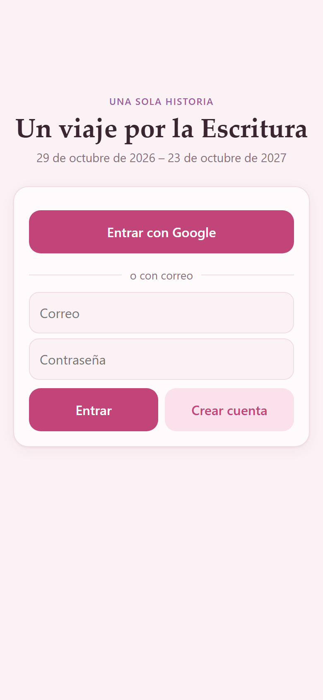
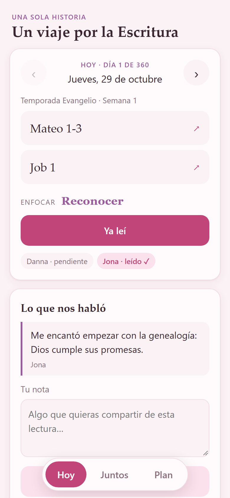
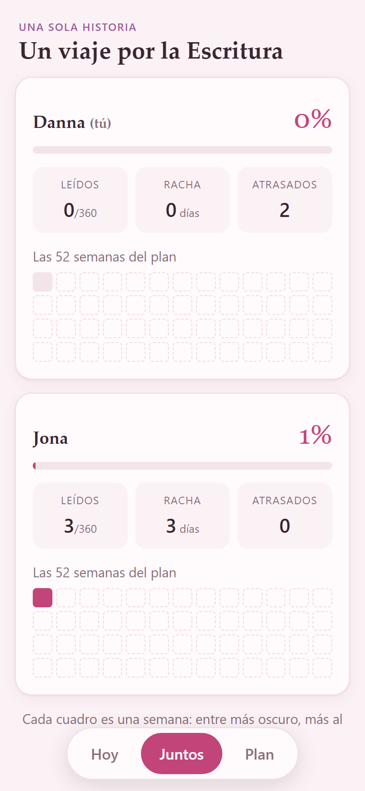
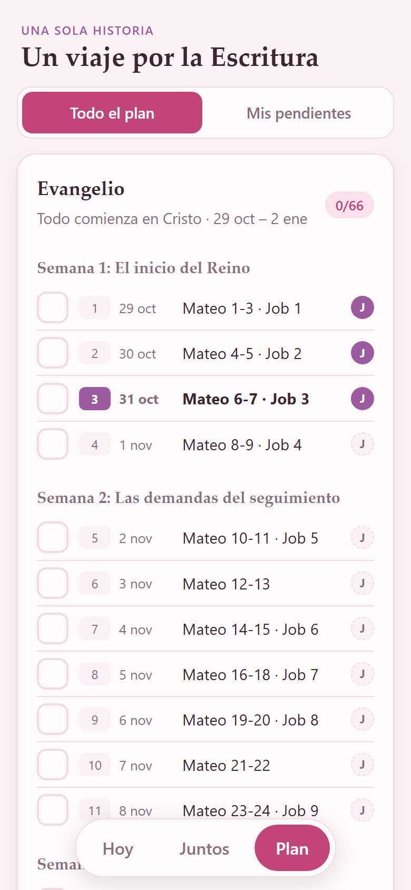

Una sola historia
Guía para leer juntos · 29 de octubre de 2026 – 23 de octubre de 2027
Una lectura de 10 a 15 minutos al día, 360 días en total. Cada quien marca lo que lee y los dos vemos nuestro avance y lo que nos habló la Palabra.
johncaste.github.io/viaje-escrituraPaso 1
No está en la App Store, pero se instala desde Safari y queda en tu pantalla de inicio con su ícono, igual que cualquier app.

Paso 2
Solo pueden entrar dos cuentas: la tuya y la mía. Usa tu correo de Gmail, el mismo que me diste.
Toca Entrar con Google y elige tu cuenta. Es la más rápida.
Úsala si la ventana de Google no abre o se queda en blanco, algo que a veces pasa en el iPhone.
Las siguientes veces solo tocas Entrar, porque la app recuerda tu sesión.
Todos los días
Es lo primero que ves al abrir la app: la lectura que toca hoy, según la fecha de tu teléfono.

Nuestro avance
Aquí vemos cómo vamos cada uno.


El mapa completo
Para el camino
Usa la opción de correo y contraseña (Opción B de la página 2).
Entraste con otro correo. Toca Usar otra cuenta y entra con el correo que me diste.
Revisa spam y promociones. Si no aparece, vuelve a intentar con Entrar usando el mismo correo y contraseña, o avísame.
Revisa que tengas internet, cierra la app por completo (desliza hacia arriba) y ábrela de nuevo.
Es normal. Cuando cambio algo, se actualiza sola al abrirla un par de veces.
“Que este viaje no termine solo con una Biblia recorrida,
sino con una fe más consciente.”